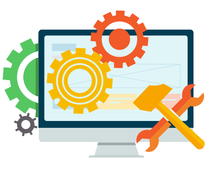

-
Mantenimiento Predictivo-Preventivo-Correctivo
En las operaciones de mantenimiento, el mantenimiento preventivo es el destinado a la conservación de equipos o instalaciones mediante la realización de revisión y limpieza que garanticen su buen funcionamiento y fiabilidad...mas información click AQUÍ
-
Mantenimiento de Hardware
El mantenimiento de computadoras es la práctica de mantenerlas en buen estado. Es posible que una computadora que contenga polvo y residuos acumulados no funcione correctamente...mas información click AQUÍ
-
Mantenimiento de Software
Es la modificación de un producto de software después de la entrega, para corregir errores, mejorar el rendimiento, u otros atributos. El mantenimiento del software es una de las actividades más comunes en la ingeniería de software...mas información click AQUÍ
-
Actualización de Equipos
Exiten dos opcines la primera actualización del sistema operativo que constantemente se dan para correccion de errores, la segunda actualizar el hardware que son las partes físicas del computador para su mayor rendimiendo y funcionalidad...mas información click AQUÍ
-
Ventas Equipos Cómputo
Contamos con los mejores productos de muy buena calidad selecionados personalmente para ti. AQUÍ
-
Venta de Asesorios y Partes
Todo tipo de asesoríos que necesites para tu computador, diademas, teclado , maus, parlantes, monitores, memorias, impresoras, hubs y mucho más. AQUÍ
-
Reparaciones
Te reparamos el equipo fisicamente reemplazando piesas dañadas o obsoletas.
-
Servicios Remotos
Cuando estas en problemas, entonces pues contar con nosotros para que te asesoremos y capacitemos con todo el gusto y resolvamos inquietudes o incovenientes remotamente.